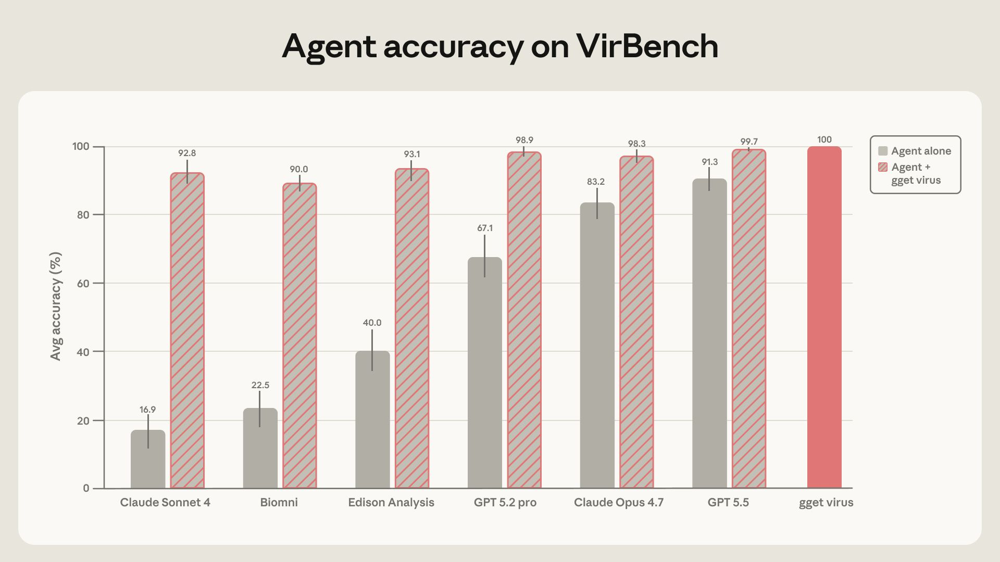
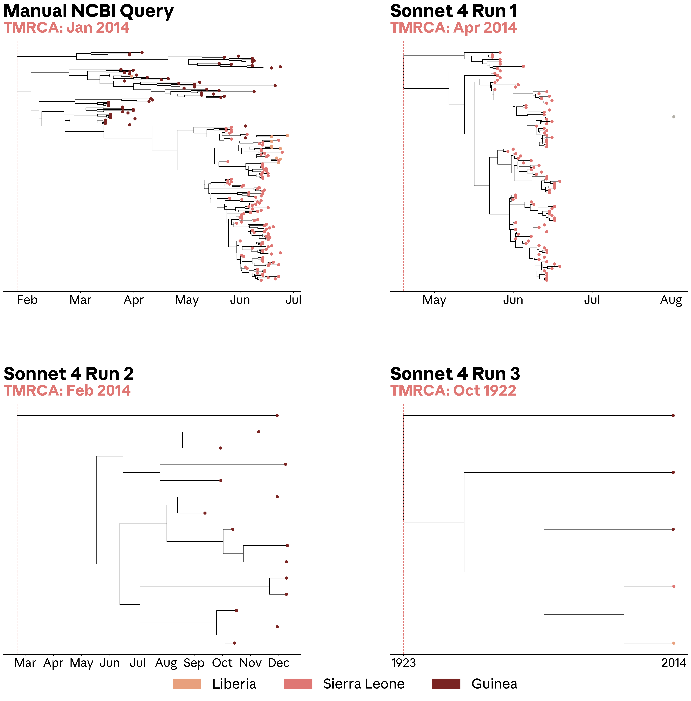
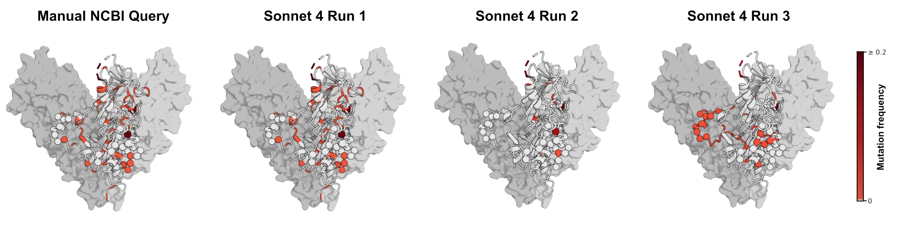

코딩 에이전트는 빠르게 좋아지고 있다. Claude Code, Codex, Gemini CLI 같은 도구는 이미 파일을 읽고, 코드를 고치고, 테스트를 돌리고, PR 수준 작업까지 처리한다.
그런데 생물학 에이전트는 왜 같은 속도로 좋아지지 않을까.
Anthropic의 Laura Luebbert와 연구팀이 이 문제를 정면으로 다뤘다. 논지는 간단하다. 생물학 에이전트의 병목은 모델의 추론 능력만이 아니다. 데이터 인프라가 에이전트에게 너무 불친절하다.

연구팀은 Claude, Biomni Open Source, Edison Analysis, GPT 계열 에이전트에게 NCBI Virus에서 바이러스 서열 데이터를 찾아오게 했다. NCBI Virus는 바이러스 감시, 진단법 설계, 단백질 모델 학습 데이터 구축 등에 쓰이는 핵심 데이터베이스다.
결과는 꽤 뼈아프다. 강한 모델도 정확하고 재현 가능한 데이터셋 구축에는 계속 실패했다. 하지만 연구팀이 gget virus라는 결정론적 검색 계층을 추가하자 정확도가 거의 100%에 가까워졌다.
핵심 교훈은 이거다.
과학 에이전트가 잘하려면 더 똑똑한 모델만으로는 부족하다. 에이전트가 믿고 호출할 수 있는 결정론적 데이터 검색 도구와 에이전트 친화적 생물학 인프라가 필요하다.
생물학 데이터 인프라는 오래된 도시 같다
Laura Luebbert는 생물학 데이터 인프라를 “자동차가 나오기 전 설계된 오래된 도시”에 비유한다. 길은 아름답고 나름의 질서도 있지만, 좁고 구불구불하고, 현지인만 아는 규칙이 많다. 현대적 자동차, 즉 AI 에이전트가 빠르게 지나가기 어렵다.
소프트웨어 세계는 다르다. Git, API, 패키지 매니저, 테스트, CI, 문서화된 인터페이스가 있다. 코딩 에이전트는 이 포장도로 위를 달린다. 출력도 비교적 검증하기 쉽다. 코드가 빌드되는지, 테스트가 통과하는지, GitHub 이슈가 닫히는지 확인할 수 있다.
반면 생물학 데이터는:
- 데이터베이스가 흩어져 있다.
- 파일 포맷과 식별자가 제각각이다.
- 웹 인터페이스에는 있는 필터가 API에는 없을 수 있다.
- 메타데이터 필드가 불완전하거나 일관되지 않다.
- 정답이 전문가 관행과 문맥에 의존한다.
- 작은 검색 오류가 downstream 해석을 완전히 바꾼다.
예를 들어 좌표를 잘못된 genome build에서 가져오면 분석 전체가 무효가 된다. RefSeq와 GenBank를 의도 없이 섞거나, partial genome을 complete genome처럼 다루거나, segmented virus의 segment 이름을 헷갈려도 결론이 틀어진다. 생물학에서는 디테일이 본질이다.
Karpathy가 말한 “클릭세”가 생물학에는 오래전부터 있었다
Andrej Karpathy는 AI 시대의 소프트웨어 강연에서 이런 불만을 말한 적이 있다. 작은 웹앱을 vibe coding으로 만드는 건 쉬웠는데, 실제 서비스로 만들려니 인증, 결제, 배포 때문에 브라우저 대시보드를 일주일 동안 클릭해야 했다는 것이다.
“코드는 제일 쉬운 부분이었다. 대부분의 일은 브라우저에서 클릭하는 것이었다.”
Anthropic 글은 이 문제를 생물학으로 가져온다. 생물학 연구자들은 오래전부터 이 클릭세(click tax)를 내고 있었다. NCBI Virus 같은 웹 인터페이스에서 필터를 하나씩 클릭하고, 조건을 재현하고, 결과를 내려받고, 다시 정리한다. 사람에게도 번거롭지만, 에이전트에게는 더 치명적이다.
Biopython, BioPerl, BioJulia, Entrez Direct, BioMart, gget 같은 도구들이 이 문제를 줄여 왔다. 하지만 생물학 데이터는 한 데이터베이스, 한 API, 한 규칙으로 정리되지 않는다. 각 데이터베이스마다 식별자, 필터, 형식, 다운로드 방식, 관행이 다르다.
사례: NCBI Virus에서 바이러스 서열 찾기
이번 연구의 사례는 바이러스 서열 검색이다. 연구팀은 VirBench라는 벤치마크를 만들었다. 40개 병원체에 대한 120개 현실적인 바이러스 서열 검색 쿼리로 구성했고, 정답 count는 사람이 검증했다.
예를 들면 이런 쿼리다.
TaxID 3052462, Zaire ebolavirus에 대해, host는 human, 지역은 Africa, 수집일은 2014년 1월 1일부터 2014년 6월 20일까지, 길이는 최소 15,200 bases, ambiguous N은 최대 1,900개, lab-passaged sample은 제외한 바이러스 서열을 가져와라.
바이러스 감시나 진단 assay 설계에서는 이런 쿼리가 실제로 중요하다. 새 유행이 발생했을 때 과거 서열과 비교해 바이러스가 얼마나 다른지, 기존 진단법이 여전히 잡아낼 수 있는지, 치료 항체가 효과를 낼지 판단해야 하기 때문이다.
문제는 이 첫 단계가 자동화하기 어렵다는 점이다. 숙련된 바이러스학자는 NCBI Virus 웹 UI에서 몇 번 클릭해 조건을 걸 수 있다. 하지만 프로그램으로 하려면 REST, Datasets, E-utilities 등 여러 API를 붙이고, 페이지네이션을 처리하고, 식별자를 맞추고, 대용량 데이터를 받은 뒤 로컬에서 다시 필터링해야 한다.
모델만으로는 정확도가 부족했다
연구팀은 Claude Sonnet 4, Claude Opus 4.7, Biomni OSS, Edison Analysis, GPT-5.2-pro, GPT-5.5 등을 테스트했다. 결과는 모델별로 크게 달랐다. 평균 정확도는 **16.9%에서 91.3%**까지 분포했다.
91.3%면 좋아 보일 수 있다. 하지만 바이러스 서열 검색에서는 사실상 부족하다. 여기서 기준은 거의 100%에 가깝다. 한두 개의 누락이나 잘못된 record가 진단법 설계, 유행 시작 시점 추정, 치료제 적용 가능성 판단을 바꿀 수 있기 때문이다.
더 큰 문제는 재현성이다. 같은 모델에게 같은 질문을 세 번 던졌는데 다른 답이 나왔다. 예를 들어 앞의 Ebolavirus 쿼리에서 Sonnet 4는 기대값 266개에 대해 한 번은 106개, 두 번째는 15개, 세 번째는 5개를 반환했다.
이건 단순히 “조금 틀렸다”가 아니다. 과학 워크플로에서는 재현성이 무너지면 그 뒤의 모든 분석이 흔들린다.
틀린 검색은 그럴듯한 생물학 결론을 만든다
연구팀은 이 오류가 downstream 분석에 어떤 영향을 주는지도 보여줬다. Ebolavirus 서열을 가져와 계통수를 만들고, 가장 최근 공통조상 시점(TMRCA)을 추정했다.

수동으로 정리한 NCBI Virus 데이터셋에서는 2014년 1월 TMRCA가 나왔다. 기존 보고와 맞는 결과다. 그런데 Sonnet 4가 검색한 데이터셋으로 만든 일부 계통수는 데이터가 불완전해서 TMRCA가 1922년으로 밀리기도 했다. 다른 run은 겉보기에는 그럴듯했지만 Guinea 서열을 놓쳐서 TMRCA가 2014년 4월로 이동했다.
이건 위험한 종류의 오류다. 완전히 터무니없는 결과라면 사람이 바로 눈치챌 수 있다. 하지만 “그럴듯하지만 틀린” 결과는 과학 해석을 조용히 왜곡한다.
치료 항체 분석에서도 비슷한 문제가 생겼다. 연구팀은 Zaire ebolavirus glycoprotein 서열을 가져와 maftivimab, MBP134 같은 항체 치료제가 결합하는 epitope 주변 변이를 봤다. Sonnet 4의 첫 번째 검색은 수동 검색에 가까웠지만, 두 번째는 대부분의 mutated residue를 놓쳤고, 세 번째는 다른 residue를 강조했다. 같은 질문이 세 가지 다른 생물학적 인상을 만든 것이다.
왜 이런 일이 생겼나
연구팀의 해석은 모델이 과제를 전혀 이해하지 못해서가 아니라는 쪽이다. 에이전트들은 대체로 무엇을 해야 하는지 이해하고 시도했다. 하지만 그것을 정확히 실행하고, 검증하고, 반복할 수 있는 기계 친화적 경로가 부족했다.
대표적인 실패 모드는 다음과 같다.
- 결과가 너무 많을 때 중간에 검색을 멈춰 under-counting이 발생한다.
- 필터 의미를 잘못 해석해 over-counting이 발생한다.
- Influenza A, HIV-1, SARS-CoV-2처럼 record가 많은 바이러스에서 편차가 커진다.
- 메타데이터 필드의 의미가 문맥과 관행에 의존할 때 흔들린다.
- 필터가 3~4개를 넘어 복잡해질수록 성능이 떨어진다.
즉 병목은 “추론”만이 아니다. 데이터베이스의 의미와 필터 동작을 안정적으로 호출할 방법이 없다는 게 더 큰 문제다.
gget virus: 결정론적 검색 계층을 넣자 정확도가 뛰었다
그래서 연구팀은 NCBI 연구자들과 협력해 gget virus를 만들었다. 목표는 NCBI Virus의 복잡한 브라우저 기반 검색 워크플로를 사람과 에이전트가 직접 호출할 수 있는 정확하고 재현 가능한 인터페이스로 바꾸는 것이다.
gget virus는 단순한 API 래퍼가 아니다. NCBI Virus는 여러 하위 리소스 위에 올라간 포털이다. 그래서 하나의 쿼리를 처리하려면 REST, Datasets, E-utilities API를 조합해야 한다. 어떤 필터는 기존 API로 걸 수 있지만, 어떤 필터는 웹 UI의 동작을 재현하기 위해 로컬에서 추가 검사가 필요하다.
또한 gget virus는:
- 대량 결과를 중간에 끊지 않도록 batching을 처리한다.
- GenBank record에 들어 있는 단백질 포함 여부 같은 추가 정보를 가져와 필터링한다.
- 최종 출력을 사람과 기계가 모두 읽기 쉬운 표준 형식으로 반환한다.
- 최종 결과가 어떻게 만들어졌는지 상세 로그를 남긴다.
결과는 극적이다.

에이전트에게 gget virus를 주자 모든 에이전트의 정확도가 90%를 넘었다. 최고는 GPT-5.5의 **99.7%**였다. run-to-run 변동성도 거의 사라졌고, 모델 간 성능 차이도 크게 줄었다.
이 대목이 중요하다. 결정론적 도구를 붙이면 “가장 비싼 최신 모델을 골라야 하는 문제”가 줄어든다. 더 저렴한 모델도 올바른 도구를 갖추면 안정적으로 쓸 수 있다. 과학 워크플로에서 신뢰성을 모델 선택에만 맡기지 않아도 되는 것이다.
생물학 에이전트에는 창의성과 결정론이 둘 다 필요하다
이 글의 메시지는 “AI가 과학을 못 한다”가 아니다. 오히려 반대다. AI 에이전트가 과학에서 유용해지려면 어디를 창의적으로 맡기고, 어디를 결정론적으로 고정해야 하는지 구분해야 한다는 주장이다.
모델은 가설을 만들고, 실험 설계를 제안하고, 메커니즘을 추론하고, 복잡한 문헌을 연결하는 데 창의적이어도 된다. 아니, 그래야 한다.
하지만 그 아래 계층은 달라야 한다.
- 유전자 ID
- 데이터베이스 schema
- 서열 검색 로직
- genome coordinate
- metadata filtering
- record provenance
- 대량 다운로드와 검증
이런 부분은 창의적이면 안 된다. 정확하고, 반복 가능하고, 로그가 남아야 한다. 생물학 에이전트의 기반에는 결정론적 실행 계층이 필요하다.
내 해석: 과학 에이전트의 다음 병목은 “모델”보다 “도로”다
코딩 에이전트가 빨리 발전한 이유는 모델이 좋아진 것도 있지만, 소프트웨어 세계가 원래 에이전트에게 유리했기 때문이다. 저장소, 테스트, CLI, API, 패키지 매니저, 로그, 버전 관리가 있다. 에이전트는 이 도로 위에서 달린다.
생물학은 아직 그 도로가 부족하다. 데이터는 많지만, 기계가 신뢰성 있게 통과할 수 있는 차선과 표지판이 부족하다. 사람 전문가가 브라우저에서 클릭하며 암묵지를 발휘하던 절차를 에이전트가 그대로 따라 하게 하면, 그럴듯한 오류가 나온다.
그래서 생물학 AI의 핵심 과제는 단순히 더 큰 모델을 붙이는 게 아니다. 데이터베이스를 에이전트의 사용자로 인정하고 다시 설계하는 것이다.
앞으로 중요한 도구는 이런 형태일 가능성이 높다.
- 자연어 의도를 구조화된 쿼리로 바꾼다.
- 데이터베이스별 필터 의미를 명확히 보존한다.
- 결과 count와 provenance를 검증한다.
- 대량 결과를 누락 없이 가져온다.
- 사람이 읽을 로그와 기계가 읽을 출력을 동시에 남긴다.
gget virus는 그 한 예다. 바이러스 서열 검색이라는 좁은 영역에서, 에이전트가 안정적으로 달릴 수 있는 “고속도로 터널”을 뚫은 것이다.
결론
Anthropic의 이 글은 생물학 에이전트에 대한 낙관과 경고를 동시에 준다.
낙관은 분명하다. 적절한 도구를 붙이면 에이전트 성능은 급격히 오른다. 모델 간 차이도 줄고, 재현성도 좋아진다. 과학 워크플로 자동화는 충분히 가능하다.
하지만 경고도 분명하다. 과학에서는 그럴듯한 답이 충분하지 않다. 특히 데이터 검색은 전체 분석의 첫 단추다. 여기서 틀리면 계통수, 진단법, 치료제 평가까지 조용히 틀어진다.
생물학 에이전트의 미래는 더 똑똑한 모델만으로 열리지 않는다. 모델이 안전하게 지나갈 수 있는 데이터 도로, 결정론적 검색 계층, 검증 가능한 실행 환경이 같이 필요하다.
코딩 에이전트의 교훈은 이제 생물학에도 적용된다.
에이전트를 만들고 싶다면, 에이전트가 일할 수 있는 세계부터 만들어야 한다.
원문: Anthropic Research, Paving the way for agents in biology